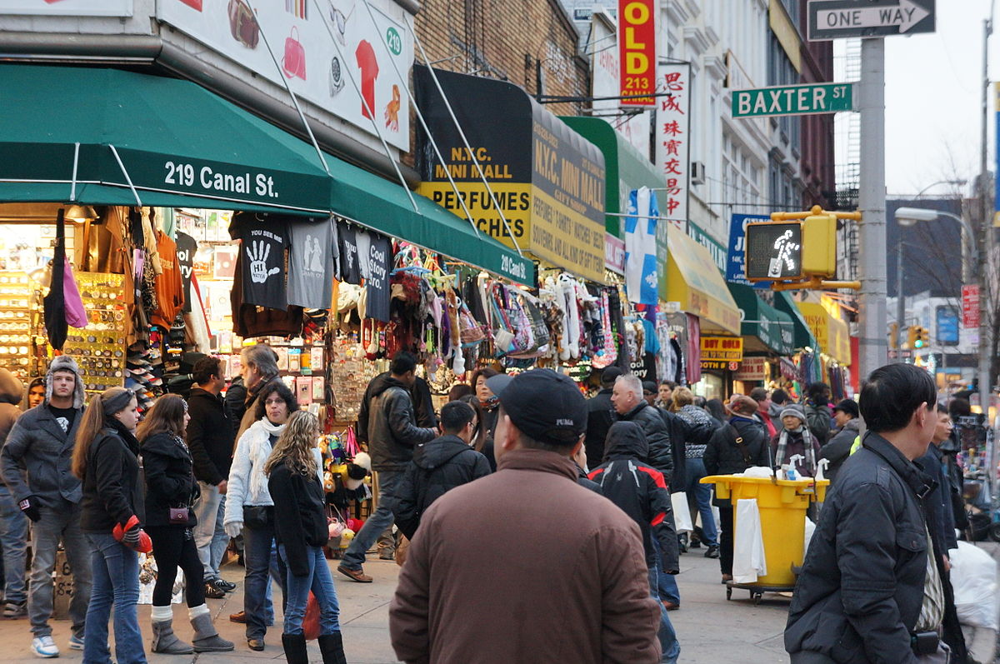
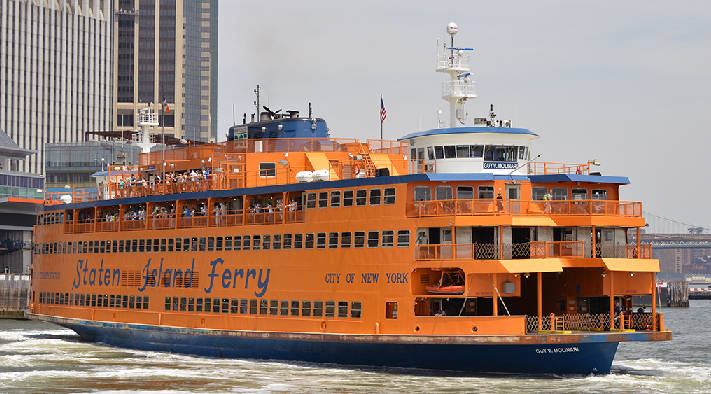
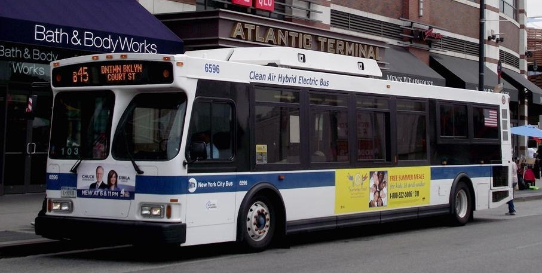
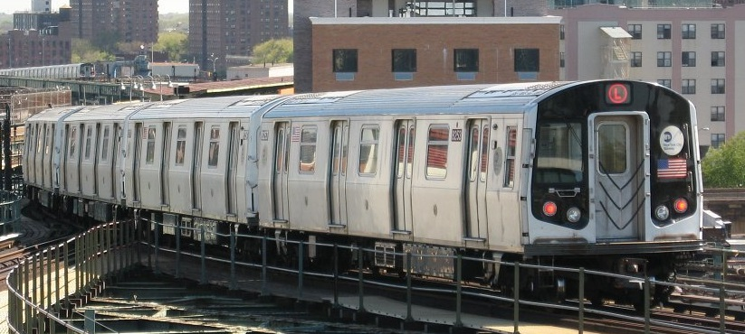

Fun facts to know about the bus, subway, and ferry system in NYC
The Metropolitan Transit Authority (MTA) is the public transit system of NYC, and it is the largest transit system
in the United States. With the busy streets of NYC, the subway is a fast way to travel in NYC. The other ways to get
to your destination is by bus and ferry. They both help you move around NYC quickly and comfortably.
The MTA has the most subway stations in the world, with 421 stations. It has 209 miles of subway track, which gives the
MTA the fifth longest amount of subway tracks in the world, after Beijing, Seoul, Shanghai, and London.
Please click the page links and learn interesting information about the different
forms of transportation within the MTA of NYC.
   